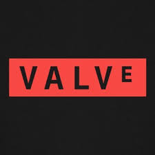
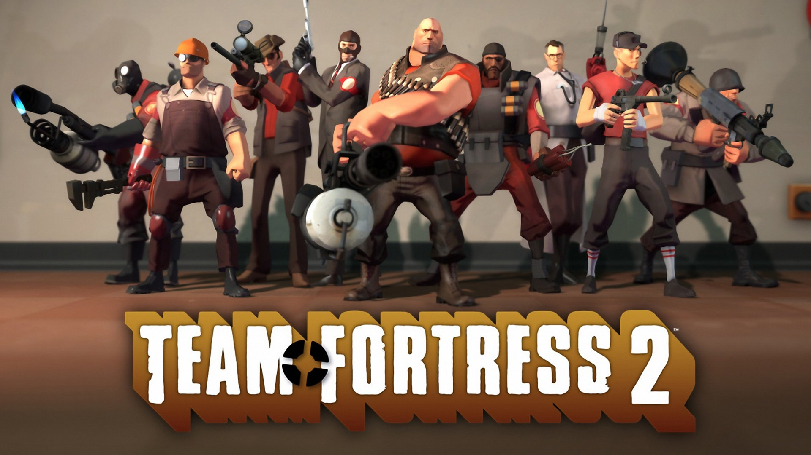

Steam було створено 12 вересня 2003 року компанією Valve. Хоча перше представлення сервісу відбулося раніше, у березні 2002 року, саме у 2003 році відбувся його офіційний випуск. Рекорд одночасних користувачів - 41,6 мільйона, було зафіксовано 12 жовтня 2025 року.
Також Vavle створює ігри, які стали популярними серед гравців у всьому світі.

Half-Life - це культовий науково-фантастичний шутер від першої особи. Перша частина вишла у 1998 році та стала революціоною для ігровой індустрії. У 2004 році Valve випустила Half-Life 2, яка стала ще більшим проривом. Гра Half-Life: Alyx, що вишла в 2020 році, є VR-продовження історії та отримала багато нагород.

Portal - це шутер-головоломка від першої особи, який поєднує платформер із голічними задачами. Огригінальна Portal вийшла 10 жовтня 2007 року. Спочатку на ПК, потім на консолях.

Left 4 Dead - кооперативни шутер від першої особи з елементом survival-horror, де гравці борться зі зомбі. Гра була випущина 17 листопада 2008 року на ПК і Xbox 360. 
Team Fortress 2 - командний мультиплеєрний шутер від першої особи. Гра випущина 10 жовтня 2007 року.
Counter Strike - це командний шутер від першої особи, в якому дві команди змагаються між собою. Перша версія вийшла 19 червня 1999 року. Повернутися на головну Наступна сторінка